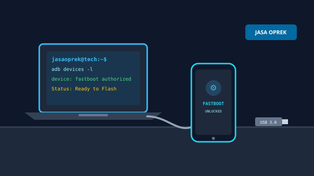
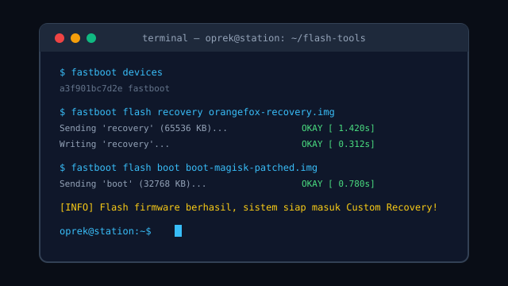
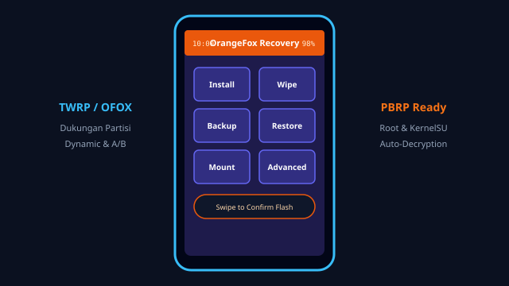
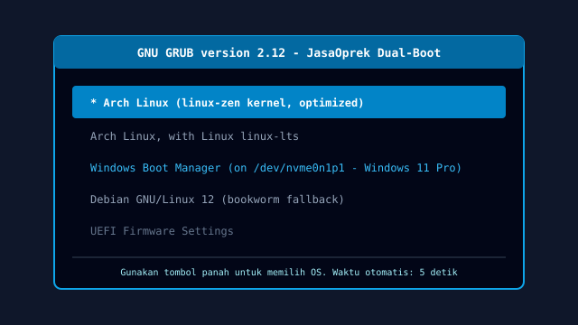

Dokumentasi proses modifikasi firmware, antarmuka recovery, hingga konfigurasi sistem operasi di meja kerja kami.
Dokumentasi Kerja & Alat

Workstation oprek dilengkapi tools flash modern dan kabel uji coba.

Eksekusi flashing via fastboot command line berjalan aman dan terverifikasi.Teknisi JasaOprek selalu memastikan setiap firmware terpasang dengan stabil.

Menu Custom Recovery memudahkan backup nandroid partisi sebelum modifikasi.

Konfigurasi dual-boot Arch Linux dan Windows 11 untuk produktivitas ganda.
Suasana Workstation Oprek
Dengarkan audio pengiring suasana fokus di ruang kerja teknisi JasaOprek saat melakukan flashing dan tuning sistem.